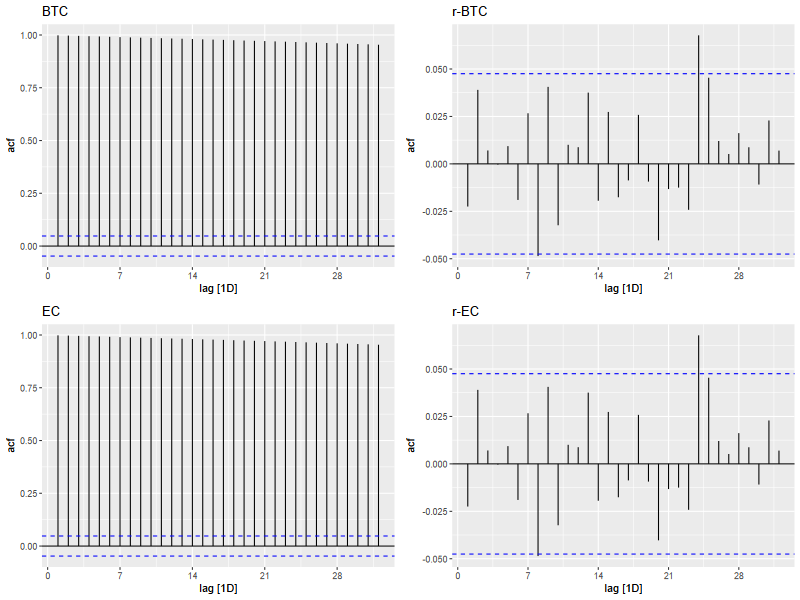

1. Introducción
El precio de un activo, los retornos, o cualquier otra variable que cambia a lo largo del tiempo la consideramos, desde el punto de vista estadístico, como la colección de variables aleatorias indizadas en el tiempo, \(X_t\). Quiere decir esto que nuestros datos son una realización de un proceso estocástico. En este sentido, nuestro propósito es aprender a partir de lo que observamos, los datos, las características de lo que no observamos, el proceso generador de datos. Como nuestras variables son temporales, lo que requerimos para el análisis es que el proceso sea estable en el tiempo. Estabilidad no quiere decir ausencia de movimientos o volatilidad, sino que las características estadísticas de la variable permanecen en el tiempo. Esto lo haremos más preciso a partir de dos conceptos: estacionariedad y dependencia débil.
2. Estacionariedad
Este es un concepto fundamental del análisis de series de tiempo. Decimos que una serie de tiempo, \(\{r_t\}\) es estacionaria fuerte si la distribución conjunta de \((r_{t1},r_{t2},\dots,r_{tk})\) es idéntica a la distribución de \((r_{t1+t},r_{t2+t},\dots,r_{tk+t})\), para todo \(t\), donde \(k\) es un valor entero positivo arbitrario. En otras palabras, que las características estadísticas no cambian en el tiempo. Una versión menos exigente es la estacionariedad débil. Decimos que la serie de tiempo es estacionaria si la media y las autocovarianzas no dependen del tiempo.
La serie de tiempo \(\{r_t\}\) es estacionaria débil si la media y las autocovarianzas no dependen del tiempo
\[E(r_t)=\mu \qquad \text{para todo } t\] \[Cov(r_t,r_{t-l})=\gamma_l \qquad \text{que solo depende de l}\]
La condición de estacionariedad débil asume que los dos primeros momentos son finitos. Esto no parece ser un problema, a no ser que la serie tenga colas gordas. En finanzas, suele asumirse que los retornos son débilmente estacionarios.
3. Función de autocorrelación
La función de autocorrelación nos indica el grado de dependencia lineal entre \(r_t\) y sus valores pasados. \[\rho_l=\dfrac{Cov(r_t,r_{l})}{\sqrt{Var(r_t)(Var(r_{t-l}))}}\] Si la serie es estacionaria, \(Var(r_t)=Var(r_{t-l})\), luego \[\rho_l=\dfrac{Cov(r_t,r_{l})}{Var(r_t)}=\dfrac{\gamma_l}{\gamma_0}\] Para una muestra dada, la autocorrelación estimada de orden \(l\) se escribe como \[\hat{\rho}_l=\dfrac{\sum_{t=l}^{T}(r_t-\bar{r})(r_{t-l}-\bar{r})}{\sum_{t=1}^{T}(r_t-\bar{r})^2}\]
Una serie es débilmente dependiente si las autocorrelaciones decaen hacia cero a medida que aumentan los rezagos. Esxta característica es muy importante pues permite el uso de la ley de grandes números y el teorema central del límite en los modelos de regresión. En otras palabras, es un supuesto clave para la estimación consistente de los parámetros vía mínimos cuadrados. Importante, muchas series de tiempo estacionarias también son débilmente dependientes, pero de lo primero no se concluye lo segundo. La figura siguiente muestra la función de autocorrelación muestral, ACF, para los precios y los retornos logarítmicos de de Bitcoin y la acción de Ecopetrol (ASD)
4. Ruido blanco
Este es otro concepto fundamental del análisis de series de tiempo. Decimos que una serie de tiempo, \(\{r_t\}\) es un ruido blanco si es una secuencia de variables aleatorias independientes e identicamente distribuidas, con media y varianza finita. Si, además sigue una distribución normal, decimos que es un ruido blanco gaussiano. Una característica distintiva del ruido blanco es que las autocorrelaciones son todas cero. Note qeu el ruido blanco recoge, desde el punto de vista de la modelación, choques aleatorios que afectan el precio del activo, y por lo tanto son impredecibles.
La serie de tiempo \(\{r_t\}\) es estacionaria débil si la media y las autocovarianzas no dependen del tiempo
\[E(r_t)=\mu \qquad \text{para todo } t\] \[Cov(r_t,r_{t-l})=\gamma_l \qquad \text{que solo depende de l}\]
La condición de estacionariedad débil asume que los dos primeros momentos son finitos. Esto no parece ser un problema, a no ser que la serie tenga colas gordas. En finanzas, suele asumirse que los retornos son débilmente estacionarios.
5. Estimación de parámetros en modelos estáticos
Antes de seguir con la formulación de diferentes procesos de series de tiempo, vale la pena detenerse en lo que llamamos modelos estáticos, a fin de apreciar la importancia de las propiedades de estacionariedad y dependencia débil en algunas aplicaciones prácticas
Considere el modelo CAPM. Este postula que el retorno esperado de un activo es igual a la tasa libre de riesgo y una prima proporcional al riesgo de mercado. Matemáticamente se formula como
\[E[r_i]=r_f+\beta_i(E[r_m]-r_f)\]donde \(r_f\) es la tasa libre de riesgo y \(r_m\) el retorno del mercado. El coeficiente \(\beta\) indica que tanto varia el exceso de retorno del activo en relación exceso de retorno de mercado. Este es un postulado teórico, y \(\beta\) es el parámetro poblacional. Nuestro objetivo es estimar \(\beta\) a partir de una muestra, es decir, una realización de la serie de tiempo
La versión empírica, estimable, de la ecuación anterior, es el modelo econométrico siguiente
\[r_{it}-r_{ft}=\alpha_i+\beta_i(r_{mt}-r_f)+e_{it}\]La estimación consistente de los parámetros por medio del estimador de mínimos cuadrados requiere: i) que las series sean estacionarias y débilmente dependientes; ii) que el error no esté correlacionado con el exceso de retorno de mercado. Así, bajo estas condiciones, es adecuado usar una muestra para obtener \(\hat{\beta}_i\)
Otra instancia en la que estos supuestos son importantes es el cálculo de ratio de Sharpe. Para T periodos este se define como
\[S_T=\dfrac{E[R_T]}{\sqrt{Var(R_T)}}\]donde \(R_T\) es el exceso de retorno acumulado
\[R_T=\sum_{t=1}^T(r_t-r_{ft})\] De acá se puede mostrar que si el exceso de retorno es estacionario y las autocovarianzas son cero \[S_T=\sqrt{T}\dfrac{\mu}{\sigma}\]6. Procesos AR
Un modelo autorregresivo, AR de orden p, AR(p), se representa como \[r_t=\phi_0+\phi_1r_{t-1}+\phi_2r_{t-2}+...+\phi_pr_{t-p}+e_{t}\] donde \(e_{t}\) es un ruido blanco. En un proceso de este estilo, la tendencia de la serie a converger o diverger a largo plazo está determinada por el valor de los coeficientes \(\phi_i\), mientras que las desviaciones de esa trayectoria de largo plazo están dadas por los choques aleatorios, \(e_t\). Estudiemos en detalle el proceso AR(1) para apreciar las ideas importantes
Supongamos una serie de tiempo \({X_t}\). Decimos que la variable aleatoria \(X_t\) sigue un proceso AR(1) si \[X_t=\phi_0+\phi_1X_{t-1}+e_t\] Si resolvemos de manera recursiva, podemos mostrar que \[X_t=\phi_0(1+\phi_1+\phi_1^2+\phi_3^3+...+\phi^{t-1})+\phi_1^tX_0+\sum_i=0^t\phi_1^{t}e_{t-i}\] Si \(|\phi_1 \lt 1|\) el proceso es \[X_t=\dfrac{\phi_0}{1-\phi_1}+\sum_{i=0}^t\phi_1^{t}e_{t-i}\] Note que si \(|\phi_1 \lt 1|\) entonces el proceso es convergente, es decir, que siempre tiende al valor \(\dfrac{\phi_0}{1-\phi_1}\). Así mismo, los choques aleatorios solo tienen efectos temporales, se diluyen en el tiempo, lo cual implica que la correlación de la variable con sus rezagos tiende a cero en la medida que la distancia temporal aumenta. Para este proceso \[E(X_t)=\dfrac{\phi_0}{1-\phi_1}=\mu\] y la varianza \[Var(X_t)=\gamma_0=\dfrac{\sigma_e^2}{1-\phi_1^2}\] Mientras que las autocorrelaciones son \[\rho_=\phi_1^l\] En otras palabras, cuando \(|\phi_1 \lt 1|\) el proceso es estacionario y débilmente dependiente.
Ahora, si \(|\phi_1\|\geq 1\), es claro que el proceso no es convergente. De especial interés es la situación cuando \(\phi_1=1\) En ese caso tenemos que \[X_t=\phi_0+X_{t-1}+e_t\] Cuando \(\phi_0=0\) el proceso anterior se convierte en una caminata aleatoria, mientras que cuando \(\phi_0\neq 0\) hablamos de una caminata aleatoria con deriva. Estos procesos no son estacionarios. Para la caminata aleatoria la media es constante, pero la varianza es función del tiempo, mientras que para la caminata aleatoria con deriva tanto la media como la varianza son funciones del tiempo.
Referencias
- Tsay, R. S. (2010). Analysis of financial time series, third edition. Wiley.